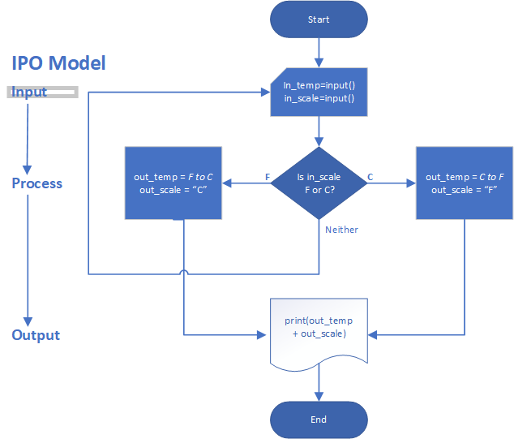

So far, your programs execute all instructions (statements) in order, but your requirements may require it to execute some instructions for one case and other instructions for another case. For example, your program can handle both conversion from Fahrenheit to Celsius and Celsius to Fahrenheit depending on what temperature the user needs to know. US users may want to know the temperature in Fahrenheit when looking at an international weather forecast (they want to convert Celsius to Fahrenheit); international users may want to know the temperature of a place in the United States in Celsius, because they are familiar to what Celsius temperatures feel like.
It seems that you can keep some of your previous program, which contains the formula for converting Fahrenheit to Celsius but you need to know additional information, such as the formula for converting Celsius to Fahrenheit. (The formula for Celsius to Fahrenheit is F = (C * 1.8) + 32.)
One way to determine the variables you need is to list the outputs and any conditions:
You can use the variables you have defined for temperature so far (in_temp and out_temp), but the needed information is whether the input scale is Fahrenheit or Celsius. For sure you need a variable for the input scale, let’s call it in_scale, and although there are other ways to write the program, let’s create another variable, out_scale, to display the output the output scale.
At this point, you can develop a flowchart, which is a visual diagram of your program’s logic. Flowcharts are often useful when you are thinking through program logic. Here is a flowchart of the temperature conversion problem:

In the interest of space, this flowchart is a modified version of a traditional flowchart; it is modified to fit on the page. Because flowcharts can become unwieldy and take longer to create than the program itself and as programs get longer, pseudo code, which is an English-like notation resembling a simplified programming language, is often used to specify the program’s instructions.
From a flowchart or pseudo code, you can start to code, but the lines in the flowchart or pseudo code will not match exactly the Python syntax you will need, but you can identify the syntax you will need:
The logic requires a condition, in this case ==, which tests whether the value of one variable is equal to something else, in this case the constant "F", or equal to the constant "C". You also need an if statement to test the condition and direct program execution to the correct lines of code to execute. And you can use the not equal condition, !=, to test for inequality and loop again when the input scale is neither Fahrenheit nor Celsius.
Before you start the assignment, study the following w3schools tutorials, which you will need to fully understand the assignment:
Notice the comments in the program, which start with a hash-tag or pound sign ( # ). You will need to add a line of code after each comment except the first one before you can execute it.
if __name__ == '__main__':
in_scale = "" # Define scale before it is used
while in_scale != "F" and in_scale != "C":
in_scale = input("Enter scale as F or C: ")
in_temp = int(input("Enter temperature to convert: "))
if in_scale == "F":
# Convert Fahrenheit to Celsius
# Set out_scale="C"
elif in_scale == "C":
# Convert Celsius to Fahrenheit
# Set out_scale="F"
else:
print("Invalid scale")
print(str(in_temp) + in_scale + ' = ' + str(out_temp) + out_scale)
Fill in the missing statements and test your program before you submit a screen shot and answer the following questions:
in_scale = "" from your program and attempt to run it. What happens and why?